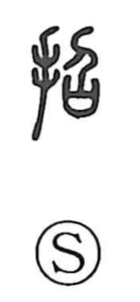

招

Uncategorized
Kun: maneku | On: shou
to invite ・ to summon ・ to beckon
Explanation
A phono-semantic character, 招 combines the hand sign (te) with 召 as its phonetic. Shirakawa reads 召 as a ritual scene: offering a sai—a covenant casket that receives written petitions to the gods—while praying for the soul of the departed to descend; here the one who “comes down” is the spirit of the dead. With the hand added, the graph captures the act of beckoning or inviting. Classical texts preserve this sense in rites such as 招魂 and 大招 in the Chu Ci, ceremonies to summon back a lost soul. By contrast, 呼 “to call” evokes sounding a clapper to summon the living. From this ritual origin, 招 naturally broadened to formal invitations and recruitment, as in 招聘 and 招賢.